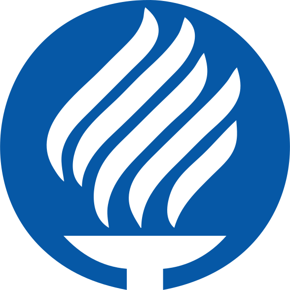
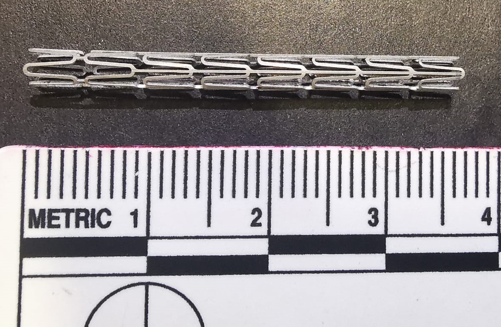
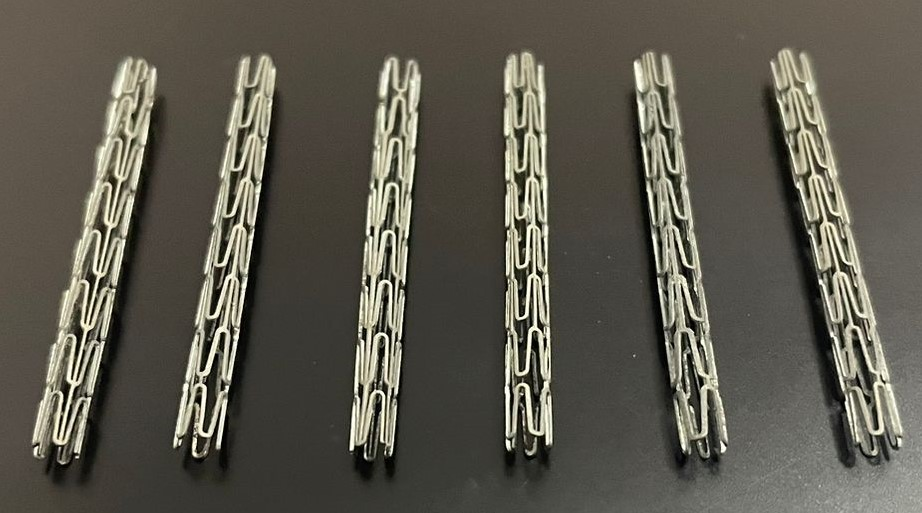

INVESTIGACION Y DESARROLLO DE PROPUESTAS DE MEJORA
Diseño y desarrollo de stent biliar para complicaciones de colecistectomía laparoscópica

El objetivo de este proyecto es diseñar y manufacturar una malla biodegradable para el conducto biliar. El diseño propuesto permitirá una implantación segura y que en el lugar del sitio requerido pueda ser expandido para cubrir el área a tratar. La malla se realizó en la aleación biodegradable de magnesio WE43. Debido al proceso de degradación del magnesio, es importante estudiar las propiedades mecánicas del dispositivo así como el desempeño del mismo.



Contacto
Ph.D. Elisa Virginia Vázquez Lepe elisa.vazquez@tec.mx +521 81 8358 2000